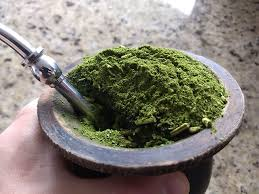

2º Motivo
Por ser uma bebida quente, ela te ajuda a se manter aquecido em dias frios

Fatos sobre chimarrão
Chimarrão contem cafeina, serca de 1,0% a 2,5%
Ele ajuda na digestão
E auxilia na regeneração celular